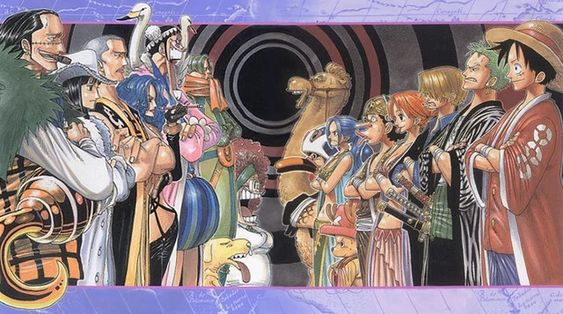

Episódios: 62 a 135
Esta saga tem início com a tripulação do Chapéu de Palha embarcando numa aventura rumo às perigosas corredeiras da Reverse Mountain. O objetivo é entrar na Grand Line, a corrente oceânica conhecida por ser a região mais perigosa do oceano em todo mundo, motivo pelo qual ganhou o apelido de "cemitério de piratas". A partir do segundo arco desta saga, Luffy já está em posse do Log Pose, o dispositivo de navegação fundamental para viajar pela Grand Line. Eles acabam indo parar em Whisky Peak, a primeira ilha que os Chapéus de Palha encontram na rota. O local é conhecido por acolher os piratas de forma calorosa, mas a tripulação de Luffy logo descobre que há muitos segredos por trás dessa pretensa recepção. A segunda ilha visitada pelos piratas de Luffy é a Little Garden, uma ilha de verão habitada plantas e animais pré-históricos e dois gigantes, Dorry e Brogy. Marcado pea perseguição do temido Baroque Works aos gigantes e pela guerra que os próprios gigantes parecem destinados a travar, este arco é conhecido por suas cenas de violência. Nami acaba pegando uma febre mortal em Little Garden, o que faz com que a tripulação de Luffy parta para a ilha seguinte, Drum Island. Lá eles procuram um médico para a pirata. Depois de enfrentar ataques de outros piratas e diferentes criaturas, eles acabam conhecendo Tony Tony Chopper, que entra para o grupo e se torna o médico da tripulação.
